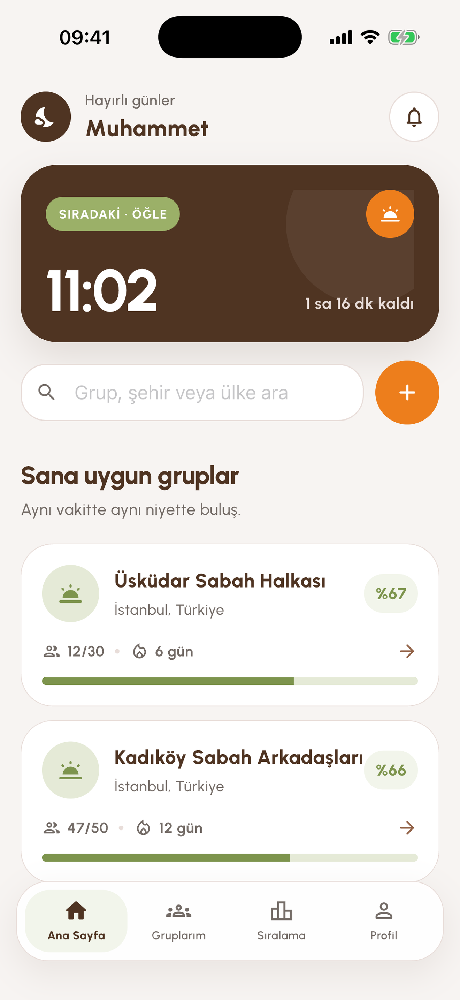
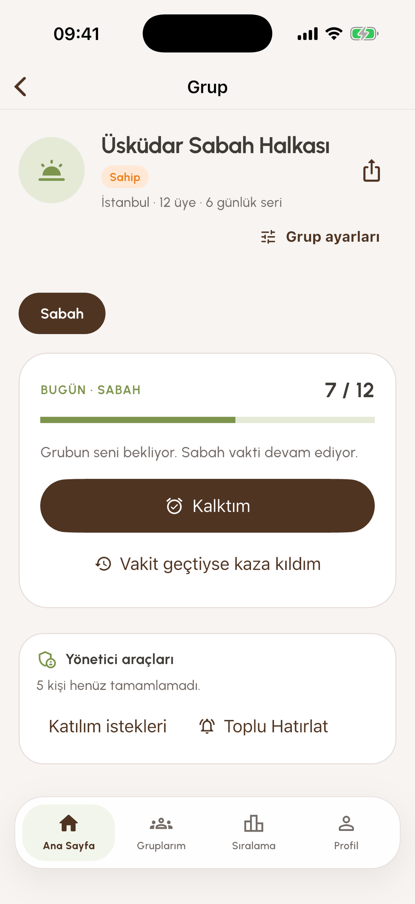
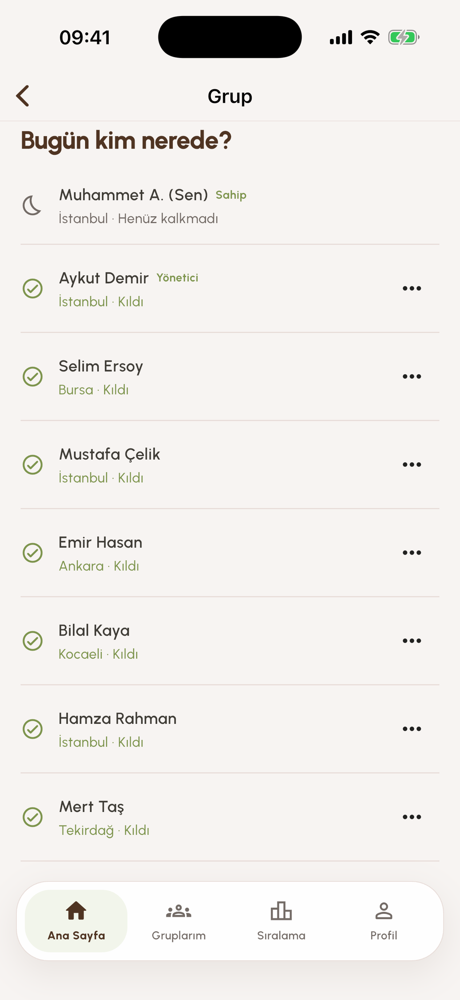
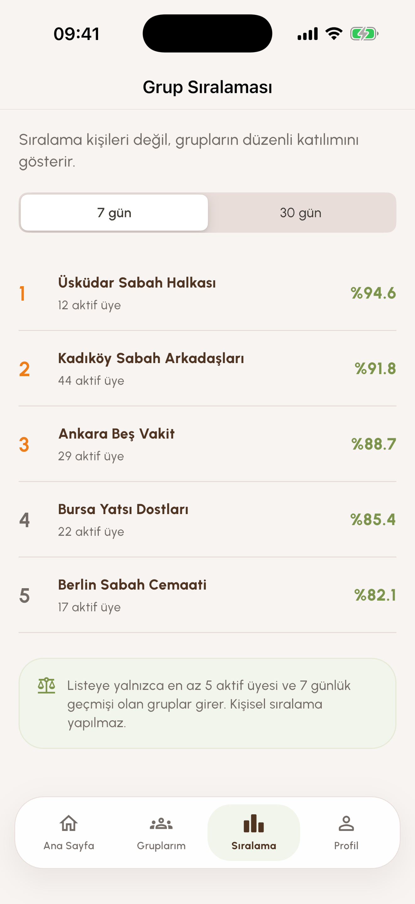

Birlikte devam et
Namazı grubunla takip et.
Vakitleri gör, tamamladığın namazları işaretle ve arkadaşlarınla birbirinizi nazikçe destekleyin.

Günlük ritim
Takip sade, destek insani.
İbadet düzenini görünür kılan araçlar, yarış baskısı oluşturmadan grubunla devam etmen için tasarlandı.
Doğru vakitler
Konumuna veya seçtiğin şehre göre namaz vakitlerini gör; istediğin bildirimleri ve sabah alarmını yönet.
Grup desteği
Grup oluştur, uygun gruplara katıl, günlük durumu ve 7/30 günlük devamlılığı birlikte takip et.
Kontrollü paylaşım
Fotoğraflı gruplarda doğrulama fotoğrafını yalnızca kamerayla gönder. Fotoğraflar aktif grup üyelerine görünür ve olağan durumda 12 saat içinde silinir.
Uygulamanın içinden
Grubun, üyelerin ve ilerlemen tek yerde.



Güvenli topluluk
Paylaşımın sınırı belli.
Hesap ve içerik kontrolleri uygulamanın merkezinde yer alır.
Rıza ve kontrol
Konum, bildirim, fotoğraf ve tanılama özellikleri kullanıcı seçimi ve cihaz izinleriyle çalışır.
Engelleme ve şikâyet
Kullanıcı, grup ve fotoğraflar uygulama içinden bildirilebilir; istenmeyen kullanıcılar engellenebilir.
Hesap silme
Hesap ve ilişkilendirilebilir veriler Profil bölümünden kalıcı olarak silinebilir.
Yardıma hazırız
Bir sorun mu var?
Hesap, grup, bildirim, vakit veya fotoğraf özellikleri için destek sayfasındaki adımları kullanabilirsin.